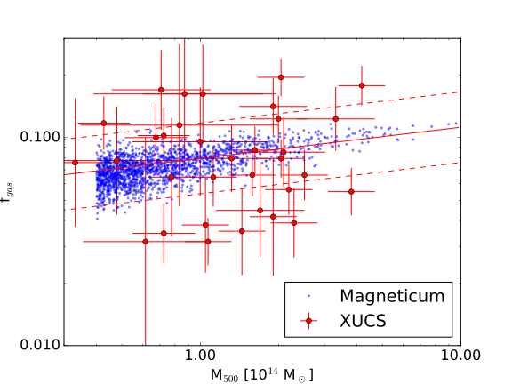
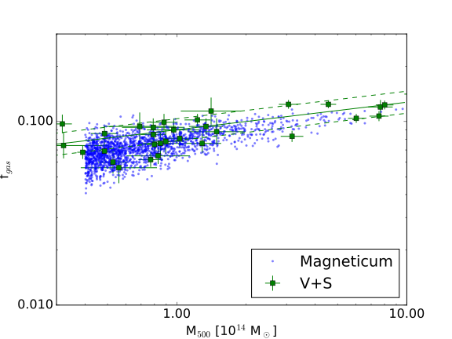
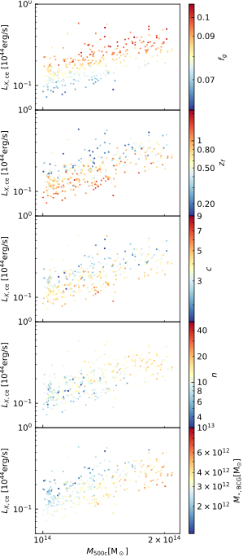
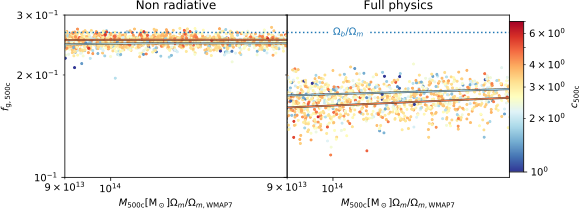

The motivation behind Ragagnin et al., 2022b it was an extremely exciting quest on uncovering the origin of the objects that are biased to be missed by X-ray observations: namely X-ray faint groups and clusters.
To this end, we used Magneticum Box2/hr simulations and computed the mass, concentration, and X-ray luminosity of clusters (we used tables from PHOX by Biffi et al., as used for instance in Truong et al., 2018).


Source: Ragagnin et al. (2022b)
X-ray faint objects are old clusters that have run out of gas

Source: Ragagnin et al. (2022b)
We know that X-ray luminosity is tightly related to gas fraction (see the Kaiser scaling relation modelling). The new question therefore became: what characterises gas-poor clusters?
What we found (see Figure on the left) is an anti-correlation (at fixed mass) between gas fraction and NFW concentration. What does it mean? well, it is well estabilished from the studies from "the bigs" of the DMO papers era (Bullock, Kyplin, Maccio, Ludlow, NFW, ecc..), that concentartion relaates to formation time. We therefore concluded that X-ray faint objects are old.
We then proceeded to understand why they are old. What we found is that clusters that assembled early have had more time for their central supermassive black holes to inject energy into the surrounding gas. This AGN feedback is powerful enough to expel a substantial fraction of the intracluster gas entirely beyond the virial radius.
To confirm this finding
(and that is why I love using simulations)
we tracked gas particles in time
that were inside each halo at its formation epoch
and asked where they ended up at z = 0.
The ejected gas budget alone was sufficient to explain why old clusters are systematically gas-poor
compared to young ones at the same mass.
The role of AGN feedback

Source: Ragagnin et al. (2022b)
A decisive test came from comparing full-physics simulations with non-radiative runs (no AGN feedback, no star formation). Without AGN, concentrated haloes are actually more gas-rich: adiabatic contraction pulls gas inward as the dark matter halo deepens. Switching on AGN feedback reverses this correlation: concentrated, early-forming clusters become gas-poor. This explains why older simulation studies reported results that contradicted more recent ones: different baryon physics prescriptions can reverse the sign of the gas fraction–concentration relation.
Final Remarks
I belive it is of extreme importance to remind what kind of bias one encounter when you are biased towards X-ray bright or gas fraction rich clusters.
At fixed halo mass, these objects share a consistent set of properties: they are old (high formation redshift), concentrated (high NFW concentration), gas-poor, and host unusually massive brightest central galaxies, because the BCG has had more time to accrete satellite galaxies. This also implies they will resemble fossil groups. They also tend to have slightly fewer member galaxies (lower richness).
X-ray faint samples are the oldest, most relaxed, gas-depleted clusters, missing them must be taken with care as one risk of biasing both the normalisation and scatter of the scaling relations used for cosmological inference.
Full paper: Ragagnin et al. (2022b)